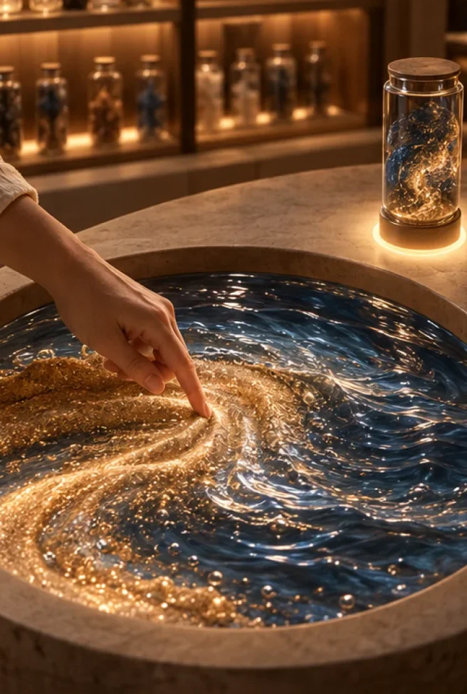
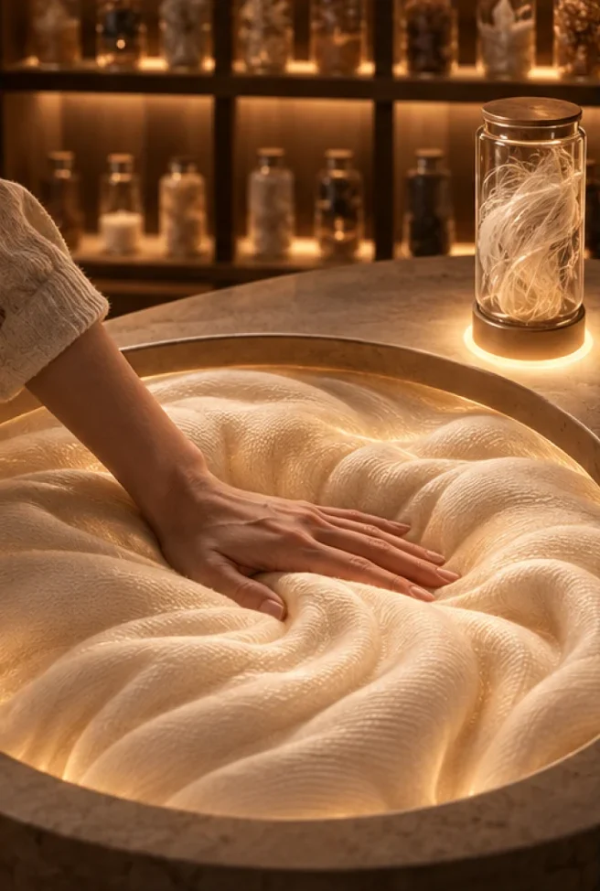
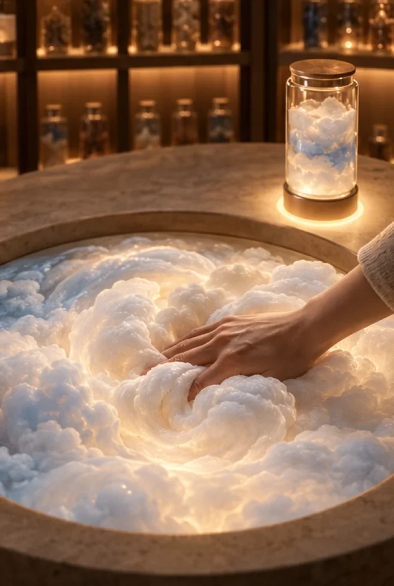

moriThe Tactile Archive
mori — a late-night tactile bar where memories of touch are kept in glass jars and brought back to the fingertips.
Key Visuals




Future
Photos, videos and conversations are all recorded. Memories we can see are everywhere; the warmth and texture we once touched are kept nowhere.
For whom
People who miss how a moment felt more than how it looked — “the warmth that filled the living room, more than the smiling faces in the photo.”
What makes it unique
Memory you touch, not memory you watch. A short ritual of choosing a jar and placing it on the machine, and a menu that includes textures no one has felt before.
Experience
- Pick a jar from the wall
- Place it on the dock
- The machine reads the jar
- The basin fills with its texture — sand and waves, a warm blanket, an untouched cloud
Visual Core · 8 rules
- Light from below — amber glow rising from basins and jars
- Circles repeat — round counter, round basins, cylindrical jars
- Amber base, one texture color — honey and wood tones plus a single accent
- The hand is the subject — faces lowered or cropped
- Cork-stoppered glass jars — hundreds, with handwritten labels
- Texture within reach — sand, ripples, moss, fabric up close
- From above, or at hand height — top view and close-up
- Low light, shallow focus — dim night, soft film grain
How we got here
- 1. From storing memories to reliving them — research on a memory-archive service; kept the insight that people miss temperature and texture, not images.
- 2. From objects that hold records to experiences of the hand — HANDOVER, a glove that passes on hand skills.
- 3. From 10 mood boards to touchable surfaces — 350 + 244 images; kept matte, fabric and organic surfaces.
- 4. After feedback, from the glove to jars and a machine — dropped the seal, gift box and home device; one place, one gesture.
Digital Content Design with GenAI · Midterm · Week 09All images AI-generated (Midjourney) · everyday-experience-hunt.onrender.com/mori/